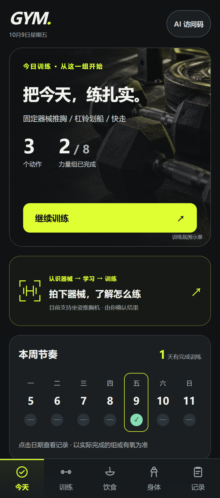
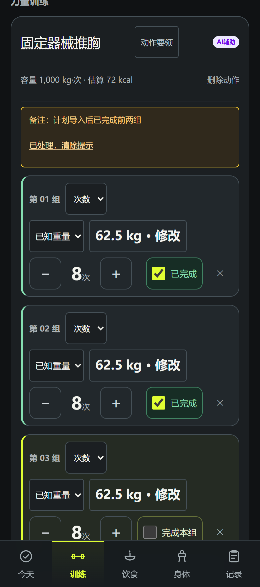
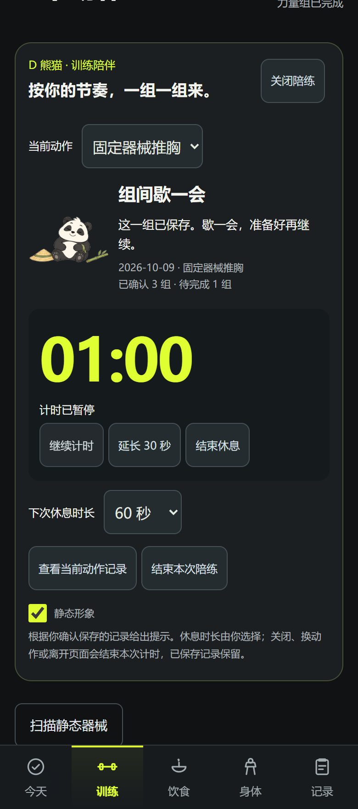
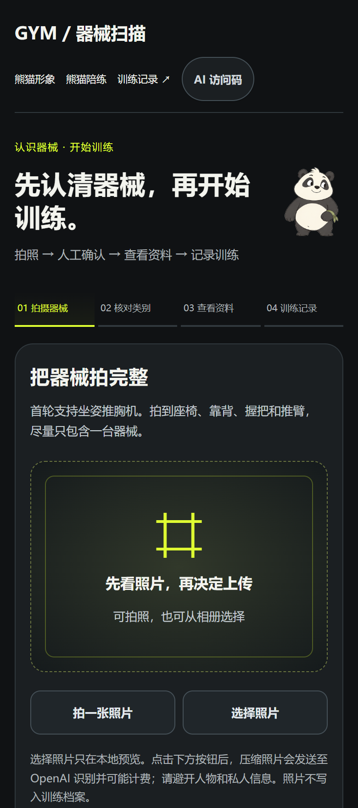
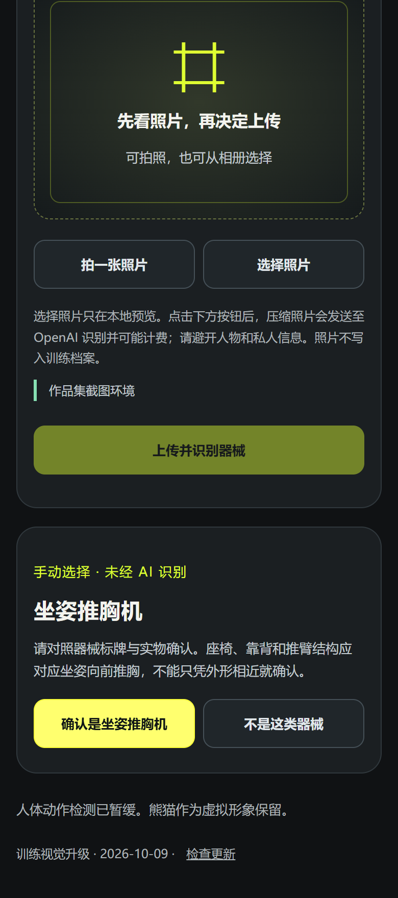
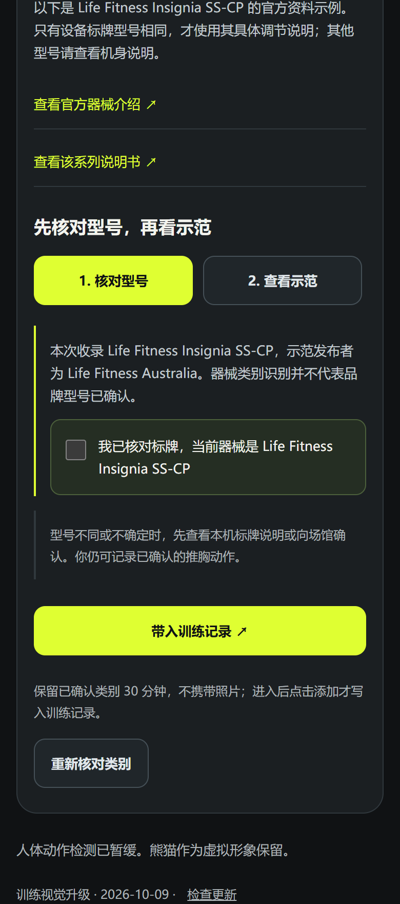
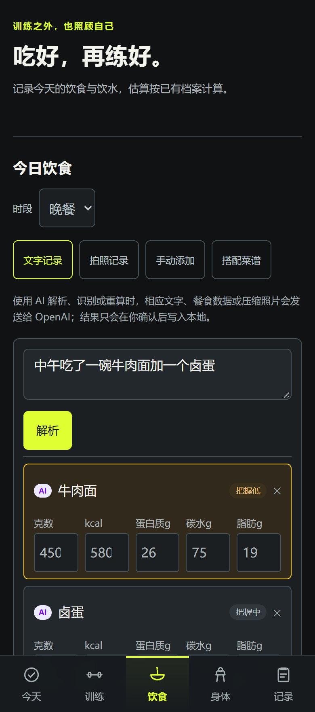
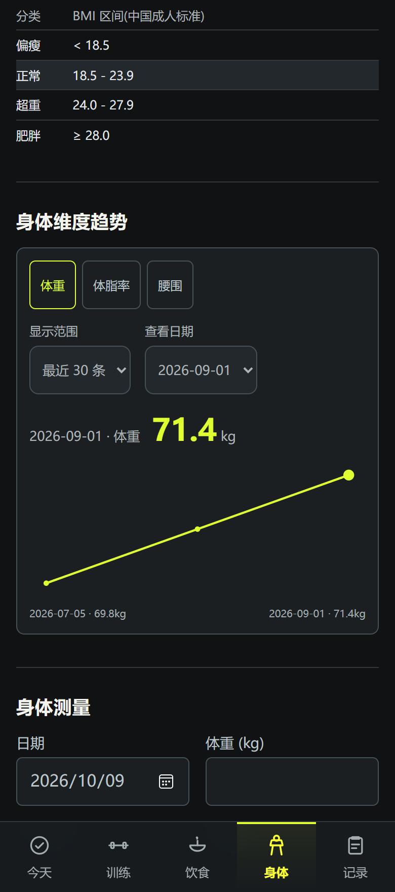
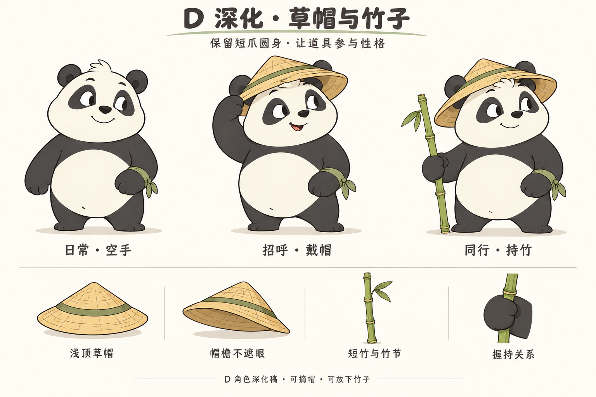

查动作还要去外部平台。
连接器械确认、适用资料与当天训练。
01 / OVERVIEW
Gym · 手机优先的 AI 健身与饮食记录产品。本人主导需求、交互与验收，借助 AI 工具实现。



02 / CORE JOURNEY
先收敛到坐姿推胸机：候选需人工确认，资料需核对型号，用户明确添加后才写入训练。



器械截图来自手动选择路径，不代表实时识别结果或准确率；真实照片与专业教学审校仍待补。
03 / USER CONTROL
常规训练复用已有信息，零散输入形成可编辑草稿。缺失重量不填零，保存失败不伪装成成功。


AI 饮食画面使用固定返回展示核对交互，本次截图未调用模型；身体数据为合成资料。
04 / COMPANION
以已确认原稿保持形象一致，在准备、休息和结束时给出轻量反馈。三种运动试作已撤下。

05 / PRODUCT JUDGMENT
以下为作者自述及转述的同学、朋友意见归纳，无正式访谈样本数；不补写姓名、引语或满意度。
连接器械确认、适用资料与当天训练。
把当天训练与继续操作放在首页中心。
保留原稿与休息反馈，撤下运动试作，暂停人体镜像。
新手确认器械、固定计划训练、事后补记饮食是设计情境，不能当作三位真实受访者。
06 / DELIVERY
从需求到界面，从保存行为到验证证据。展示真实做成的内容，清楚说明还没有证明什么。
| 交付内容 | 结果与依据 |
|---|---|
| 可体验产品 | 网页 / 可安装应用；训练、饮食、器械资料与熊猫陪练相连。 |
| PRD | 四页：目标、范围、流程、功能验收、异常与待验证指标。 |
| 简历项目描述 | 讲清个人责任、如何推进和实际取舍，含紧凑版。 |
| 模型历史评测 | 20 条训练合成回归；35 条饮食基线，10 条重算定向回归。不是受访人数。 |
| 运行验证 | 保存失败、刷新恢复、计时及手机尺寸检查；不等同真机或用户留存。 |
基础版：gym-iota-self.vercel.app
完整案例：yuxiangworks.com/projects/gym/
新版视觉见本作品集的本地成果。
真人任务成本与自然复用、真实照片识别质量、手机硬件与专业资料审校。没有虚构效率、满意度或健康效果。